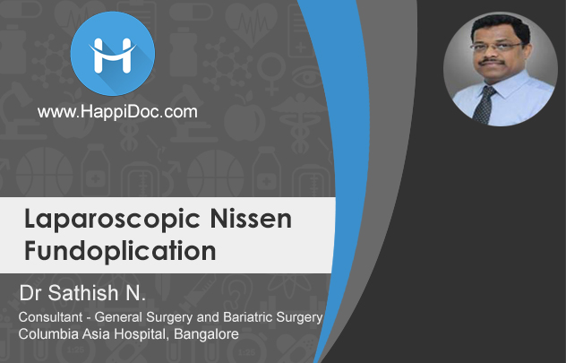
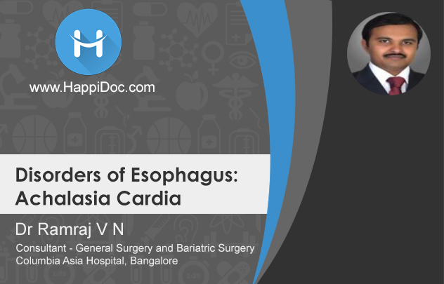
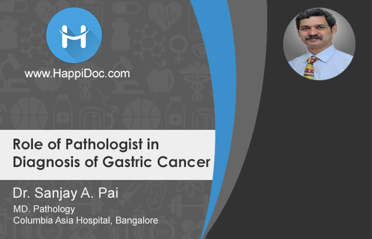
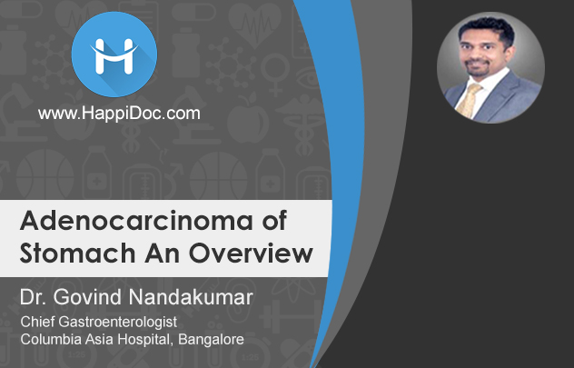
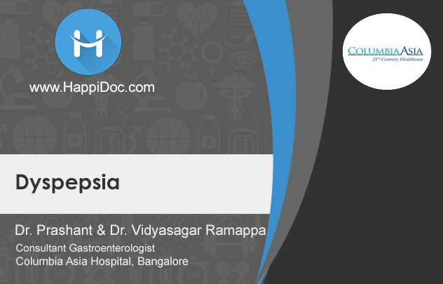
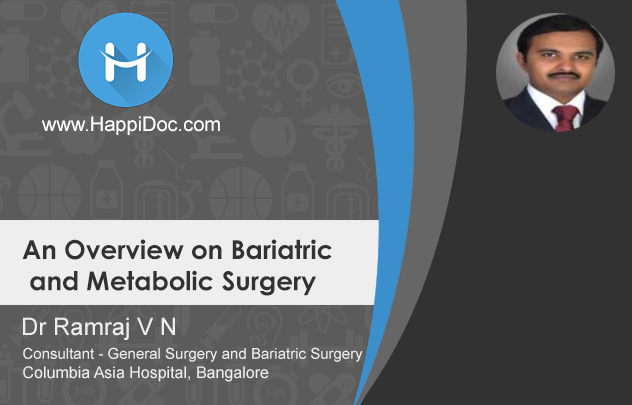
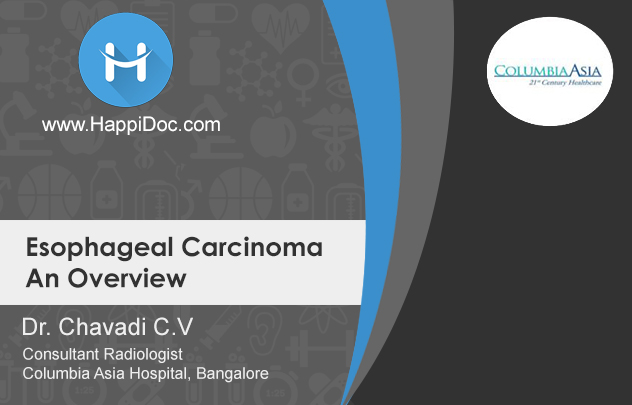

Exclusive guide to multi-disciplinary approach to GI diseases
HappiGastro Mini Webinar series is designed to help busy clinical practitioners be up to date on latest screening, diagnosis, and multi-disciplinary care approach to Hepatopancreatobiliary diseases.
The series is a set of short 5 – 7 min. videos, suited for mobile viewing, and is focused on strengthening a general practitioner’s knowledge on the early detection and management of Gastrointestinal diseases.
This HappiDoc series has been made possible due to the support of Dr Govind Nandakumar and the clinical team at Columbia Asia Hospitals Bangalore.
Laparoscopic Nissen Fundoplication by Dr. Sathish
Video duration : 5:47 minutes
Saturday 25th Nov 2017 at 2:00 PM
Description:Minimal access surgery or Bariatric surgeries are commonly done to treat gastrointestinal problems. In this video, ... Dr. Satish, Senior consultant, Dept of Surgery talks about Laparoscopic Nissen Fundoplication. The indication, procedure and the post-operative care and the common complication of fundoplication are explained in the video.
Register nowDisorders of Esophagus : Achalasia Cardia by Dr. Ramra
Video duration : 9:05 minutes
Sunday 26th Nov 2017 at 2:00 PM
Description:Achalasia is a condition where the sphincter in the lower portion of the oesophagus fails to relax as ... the food comes from the oesophagus enters the stomach. Dr. Ramraj V.N, Consultant – General surgery and Bariatric surgery, Columbia Asia Hospital, Bangalore explains the signs and symptoms, diagnosis and surgical and pharmacological options in treatment of achalasia cardia.
Register nowRole of Pathologist in Diagnosis of Gastric Cancer by Dr. Sanjay Pai
Video duration : 2:18 minutes
Saturday 2nd Dec 2017 at 2:00 PM
Description:The importance of a pathologist in diagnosis, grading & staging, and management of gastric cancer is ... explained in this video by Dr. Sanjay A Pai, Pathologist, Columbia Asia Hospital, Bangalore. He also explains about frozen section study carried out by pathologists to assist treatment of the gastric cancer.
Adenocarcinoma of Stomach by Dr. Govind Nandakumar
Video duration : 8:57 minutes
Sunday 3rd Dec 2017 at 2:00 PM
Description:An overview of the adenocarcinoma of the stomach is presented by Dr. Govind Nandakumar Head ... GI Surgery at Columbia Asia Hospital, Bangalore. The video covers symptoms, diagnosis, need for extent of disease work up; the surgical aspects of gastric cancer care (Roux-En-Y procedure) to treat the adenocarcinoma.
Register nowDyspepsia : A discussion between Dr Prashant & Dr. Vidyasagar Ramappa
Video duration : 8:37 minutes
Saturday 9th Dec 2017 at 2:00 PM
Description:Treatment of dyspepsia covers about 60% of practice for treatment of GI disorders. This video covers the symptoms, ... treatment of dyspepsia and also about the need for further evaluation to rule out malignancy.
Register nowGastroesophegeal Reflux : Discussion between Dr. Prashant and Dr. Vidyasagar Ramappa

Video duration : 10:43 minutes
Sunday 10th Dec 2017 at 2:00 PM
Description:A discussion on one of the very common symptoms - gastroesophageal reflux which covers symptoms and causative factors ... and treatment aspects are covered in this video. The discussion is between Dr. VidyaSagar and Dr. Prashanth, Consultant Gastroenterologist, Columbia Asia Hospital, Bangalore.
Bariatric & Metabolic Surgery An Overview by Dr. Ramraj V.N.
Video duration : 15:01 minutes
Saturday 16th Dec 2017 at 2:00 PM
Description:Obesity is a common problem affecting a large number of people. Bariatric & metabolic surgeries are part ... of the treatment options to overcome obesity. In an overview of bariatric and metabolic surgery, Dr. Ramraj V.N, Consultant, Columbia Asia Hospital, Bangalore presents a video covering topics on history of bariateric and metabolic surgey, treatment options to reduce weight, indications for surgery to overcome obesity.
Register nowNutrition in Weight Loss by Miss Daffodil (Nutrition & Dietetics)
Video duration : 4:34 minutes
Sunday 17th Dec 2017 at 2:00 PM
Description:Bariatric surgeries restrict the patient’s diet to liquid diet and soft diet pre and post the surgery.The restriction ... on diet impacts on the nutrition. This video from Ms. Daffodil, Columbia Asia Hospital, Bangalore explains the significance of a nutritionist guided diet plan to maintain adequate nourishment and successfully follow the diet restriction.
Register nowEsophageal Carcinoma Overview by Dr. Chavadi
Video duration : 5:55 minutes
Friday 22nd Dec 2017 at 1:30 PM
Description:Esophageal cancer is estimated as the eighth commonly occurring cancer. Dr. Chavadi, Consultant Radiologist ... at Columbia Asia Hospital, Bangalore gives an overview of – signs and symptoms, causative factors, diagnosis and staging of esophageal cancer. He explains that with early diagnosis and treatment, patient with esophageal cancer has a very good survival rate.